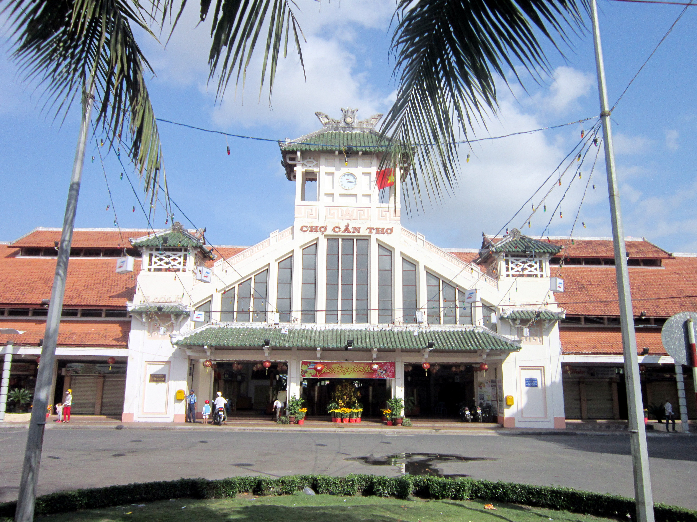
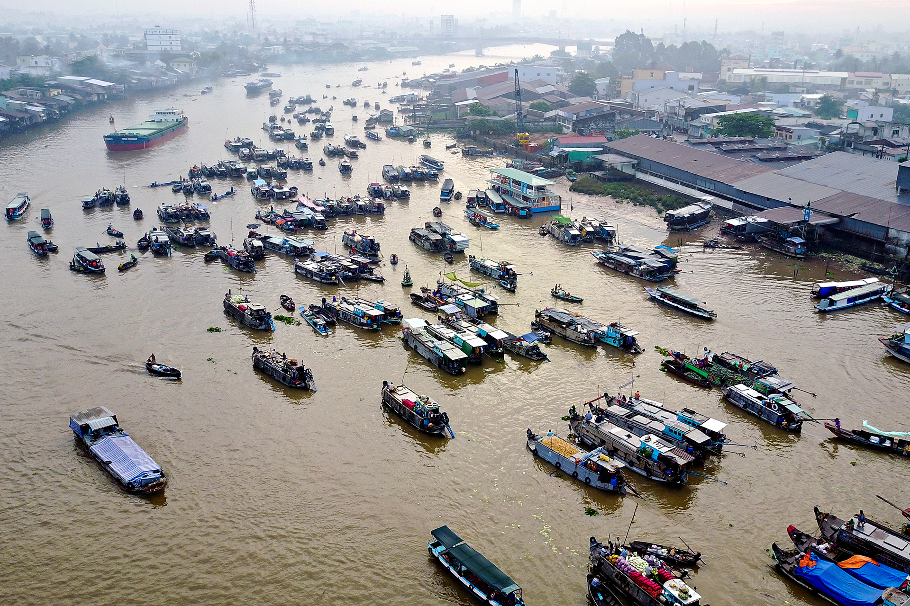
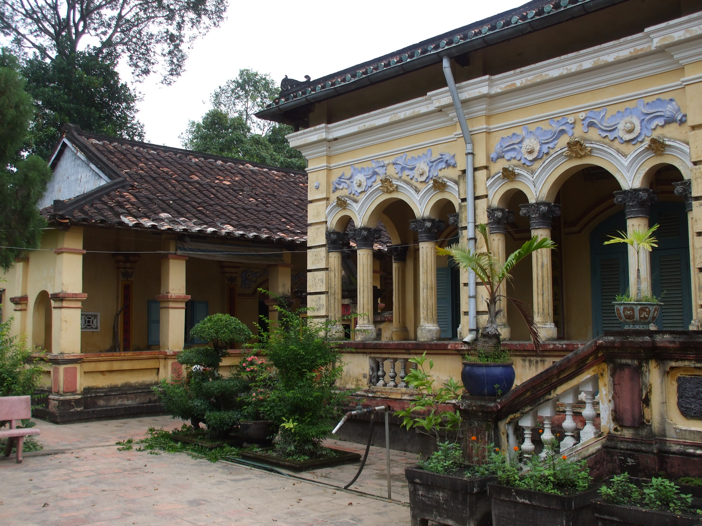
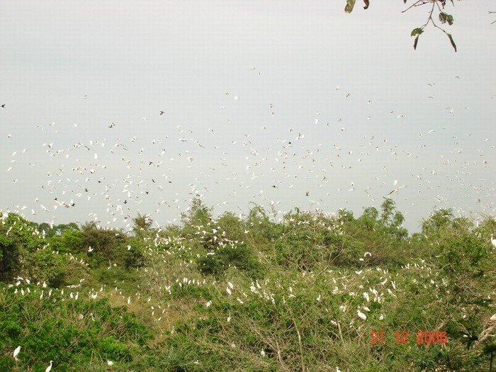
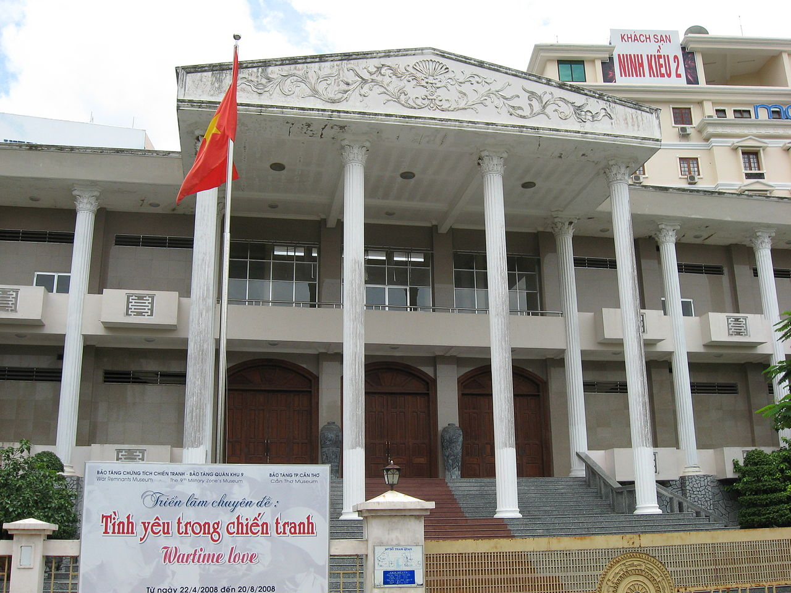

Cần Thơ gạo trắng nước trong
Ai đi đến đó lòng không muốn về.

Bến Ninh Kiều

Trung Tâm Thành Phố

Chợ Ninh Kiều

Chợ Nổi Cái Răng

Chợ Nổi Cái Răng

Nam Nhã Đường

Nhà Cổ Bình Thủy

Vườn Cò Bằng Lăng

Bảo Tàng Cần Thơ
Đôi nét về Cần Thơ qua góc máy của Chamiee Channel
Các địa điểm du lịch ở Ninh Kiều
- Bảo Tàng Cần Thơ
Bảo tàng thành phố Cần Thơ, tọa lạc tại số 1, đường Ðại lộ Hòa Bình, quận Ninh Kiều, thành phố Cần Thơ. Có diện tích gần 3.000m², nên bảo tàng Cần Thơ được xem là bảo tàng tổng hợp có quy mô lớn nhất khu vực Ðồng bằng Sông Cửu Long.Bảo tàng thành phố Cần Thơ được thành lập vào năm 1976, có tên là trung tâm văn hóa Việt – Mỹ, qua nhiều lần thay đổi tên đến năm 1992 mới chính thức mang tên Bảo tàng Cần Thơ . Bảo tàng trưng bày hiện vật và giới thiệu về Ðất nước và con người Cần Thơ qua từng thời kỳ lịch sử, các thành tựu kinh tế – văn hóa xã hội, các hiện vật, vũ khí, mô hình thời chiến của các dân tộc Kinh, Hoa, Khmer trong quá trình dựng nước – giữ nước và phát triển đất nước để có một hiện tại và tương lai tươi đẹp của vùng đất Tây Ðô ngày nay. Bên trong bảo tàng hiện trưng bày khoảng 1000 cổ vật, di vật, hiện vật, di tích lịch sử quý hiếm. Bảo tàng gồm 2 tầng lầu. Tầng trệt được trưng bày khái quát về đặc điểm tự nhiên – xã hội, Thơ xưa và nay, giới thiệu vị trí địa lý, đất đai, khí hậu sông ngòi, động thực vật, cảnh quan, văn hóa óc eo, văn hóa 3 dân tộc Kinh – Khmer – Hoa, triển lảm ảnh chụp Cần Thơ xưa và nay. Tầng 2 được trưng bày về lịch sử chống giặc ngoại xâm của nhân dân Cần Thơ – Hậu Giang trong kháng chiến chống Mỹ và Pháp cũng như những vũ khí, chiến tích chiến tranh Việt Nam.- Bến Ninh Kiều
Bến Ninh Kiều nay được gọi là Công viên Ninh Kiều là một bến nước và là địa danh du lịch, văn hóa của thành phố Cần Thơ hình thành từ thế kỷ 19. Bến Ninh Kiều tọa lạc ở bờ phải sông Hậu, nằm giữa ngã ba sông Hậu và sông Cần Thơ tiếp giáp với đường Hai Bà Trưng, phường Tân An, quận Ninh Kiều thuộc thành phố Cần Thơ. Bến Ninh Kiều là một địa danh du lịch có từ lâu và hấp dẫn du khách bởi phong cảnh sông nước hữu tình và vị trí thuận lợi nhìn ra dòng sông Hậu. Từ lâu bến Ninh Kiều đã trở thành biểu tượng về nét đẹp thơ mộng bên bờ sông Hậu của cả Thành phố Cần Thơ, thu hút nhiều du khách đến tham quan và đi vào thơ ca.- Chợ Nổi Cái Răng
Chợ nổi Cái Răng là chợ nổi chuyên trao đổi, mua bán nông sản, các loại trái cây, hàng hóa, thực phẩm, ăn uống ở trên sông và là điểm tham quan đặc sắc của quận Cái Răng, thành phố Cần Thơ. Chợ nổi Cái Răng là một trong ba chợ nổi lớn nhất Cần Thơ. Nét độc đáo và đặc điểm chính của chợ nổi Cái Răng là chuyên buôn bán các loại trái cây, đặc sản của vùng đồng bằng sông Cửu Long. Chợ nổi Cái Răng nằm trên sông Cái Răng, gần cầu Cái Răng, cách trung tâm thành phố Cần Thơ khoảng 6 km đường bộ và mất 30 phút nếu đi bằng thuyền từ Bến Ninh Kiều (thành phố Cần Thơ - thủ phủ của Tây Đô cũ). Cũng như những chợ nổi khác ở Đồng bằng sông Cửu Long, chợ được hình thành để đáp ứng nhu cầu mua bán, trao đổi hàng hóa khi đường bộ và các phương tiện lưu thông đường bộ chưa phát triển. Người ta tụ tập trên sông và bằng các phương tiện như xuồng, ghe, tắc ráng...Các địa điểm du lịch ở Bình Thủy
- Nam Nhã Đường
Chùa Nam Nhã - còn gọi chùa Minh Sư - nằm trong khung cảnh tĩnh mịch với cảnh trí đơn sơ bên bờ sông Bình Thuỷ. Chung quanh là khu vườn rợp mát. Trong vườn, trước đây được trồng nhiều loại cây quý như tùng, trắc và các cây cổ thụ khác. Dưới bóng mát những gốc cây này là những cây kiểng quý giá, nhiều tuổi, được chăm chút công phu tạo cảnh quan an bình thoát tục. Du khách đến Cần Thơ, theo đường Cách Mạng Tháng Tám đi lên Bình Thủy, sẽ thấy Nam Nhã Đường nằm ở vị trí bên phải đầu vàm Bình Thuỷ, đối diện đình Bình Thủy bên kia sông. Nơi này, xưa thuộc ấp Bình Nhật, xã Long Tuyền (nay thuộc phường An Thới, quận Bình Thủy, thành phố Cần Thơ).- Nhà Cổ Bình Thủy
Nhà cổ Bình Thuỷ nằm ngay trên đường Bùi Hữu Nghĩa, phường Bình Thủy, ngôi nhà cổ của gia đình họ Dương (xây từ năm 1870), mỗi năm đón tiếp hàng ngàn lượt khách trong ngoài nước đến tham quan. Nhà cổ Bình Thủy kiến trúc độc đáo trên 100 năm tuổi, là sự kết hợp giao lưu văn hóa Đông – Tây, được thể hiện nhiều họa tiết hoa văn đẹp mắtCác địa điểm du lịch ở Phong Điền
- Khu Du Lịch Mỹ Khánh
Làng Du Lịch Mỹ Khánh thuộc huyện Phong Điền – TP.Cần Thơ là điểm đến hấp dẫn và là điểm du lịch tiêu biểu ở Đồng bằng sông Cửu Long, nằm cách trung tâm TP.Cần Thơ 10km, trên tuyến Lộ Vòng Cung lịch sử và ở giữa hai chợ nổi Cái Răng và Phong Điền, là nơi hội tụ những tinh hoa văn hóa sông nước miệt vườn với nhiều chủng loại trái cây đặc sản, bốn mùa trĩu quả và nhiều chương trình ẩm thực phong phú, đậm chất Nam bộ và nhiều nhà hàng có số ghế ngồi phù hợp nhu cầu của khách,hội trường 350 chỗ ngồi với đầy đũ trang thiết bị, có đội tàu và du thuyền chuyên phục vụ tham quan chợ nổi,ăn uống trên tàu. Đến với Làng Du Lịch Mỹ Khánh, quý khách thỏa sức khám phá, tìm hiểu về đời sống cư dân miệt vườn như: tham quan Nhà cổ Nam bộ , thưởng thức chương trình văn nghệ “Đờn ca tài tử”, “Một ngày làm Điền Chủ” với bữa cơm điền chủ, “Một ngày làm nông dân”, “Tát mương bắt cá…”, tham quan Làng nghề văn hóa truyền thống, vườn cây ăn trái, các dịch vụ tại chỗ như đi xe ngựa, bơi thuyền, Taxi điện, đua heo, đua chó, xiếc khỉ, câu cá sấu…và nhiều chương trình khác theo yêu cầu của quý khách.- Thiền Viện Trúc Lâm Phương Nam
Thiền viện Trúc Lâm Phương Nam được khánh thành ngày 17/5/2014, tại xã Mỹ Khánh, huyện Phong Điền, TP Cần Thơ. Thiền viện Trúc Lâm Phương Nam được xây dựng trên diện tích gần 4 ha, với kết cấu lợp ngói, khung cột gỗ lim, chánh điện rộng cùng nhà tổ, nhiều tượng Phật được làm bằng gỗ Du Sam… Tổng kinh phí xây dựng là 145 tỷ đồng. Đây là ngôi chùa rộng nhất khu vực Đồng bằng sông Cửu Long. Thiền viện Trúc Lâm Phương Nam do Đại tướng Phạm Văn Trà - nguyên Bộ trưởng Bộ Quốc phòng - đề xuất xây dựng và chính Đại tướng cũng là trưởng ban vận động đóng góp xây dựng Thiền viện.Các địa điểm du lịch ở Thốt Nốt
- Vườn Cò Bằng Lăng
Vườn cò Bằng Lăng ở xã Thới Thuận, huyện Thốt Nốt cách Cần Thơ 45 km đi theo Ql 91 hướng về Long Xuyên, vườn rộng hơn 2 ha có trên 20 loài chim, 10 giống cò với số lượng đông hàng chục ngàn con sinh sống trong vườn. Có 2 cách để đi thăm vườn cò: khách du lịch có thể thuê thuyền. thong thả theo dòng sông Hậu, len lỏi vào các con kênh nhỏ để vào thăm vườn, hoặc du khách có thể đi xe. Đường vào vườn cò là đường làng nhỏ, không thích hợp cho xe du lịch. Khách du lịch có thể đi xe máy để vào hoặc là đi bộ. Đi bộ là thú vị nhất, khách du lịch có thể thả hồn theo khung cảnh thôn dã trên đường đi.